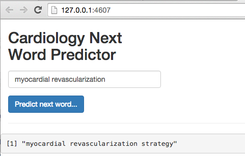

Speak Like a Doctor - Use Natural Language Processing to Predict Medical Words in R
Practical walkthroughs on machine learning, data exploration and finding insight.

Resources
Packages Used in this Walkthrough
- {RISmed} - RISmed: Download Content from NCBI Databases
- {ngram} - ngram: An n-gram Babbler
- {shiny} - shiny: Web Application Framework for R
We’re going to bring different tools together to build a nifty natural language processing (NLP) application to predict the next word in a partial sentence. We will use PubMed and the RISmed package to download a specialized medical corpus (see walkthrough Getting PubMed Medical Text with R and Package {RISmed}), n-grams, and a Shiny application for interactivity.
A Specialized Medical Corpus
Let’s get a specialized medical corpus on the subject of cardiology. I will not go into too much detail about the PubMed code as it is covered in my other walk-through Getting PubMed Medical Text with R and Package {RISmed}.
Let’s write the Get_PubMed_Data function that takes a topic, date range, and quantity of abstracts to return. This function users the RISmed package to download medical abstracts from PubMed:
Get_PubMed_Data <- function(topic, start_date, end_date, return_count) {
require(RISmed)
search_query <- EUtilsSummary(topic, retmax=return_count, mindate=start_date,maxdate=end_date)
summary(search_query)
# see the ids of our returned query
QueryId(search_query)
# get actual data from PubMed
records<- EUtilsGet(search_query)
class(records)
# store it
pubmed_data <- data.frame('Title'=ArticleTitle(records),'Abstract'=AbstractText(records))
head(pubmed_data,1)
pubmed_data$Title <- as.character(pubmed_data$Title)
pubmed_data$Abstract <- as.character(pubmed_data$Abstract)
pubmed_data$Abstract <- gsub(",", " ", pubmed_data$Abstract, fixed = TRUE)
return (pubmed_data)
}
Using the above function, we’ll request 1500 medical abstracts from the 2013 to 2015 on the subject of cardiology. This will endow us with highly specialized medical lingo in the form of thousands of sentences on the subject of cardiology (you can switch the topic to other subjects, even use a different non-medical corpus):
medical_corpus <- Get_PubMed_Data('cardiology', 2013, 2015, 1500)
dim(medical_corpus)
# [1] 1500 2
N-grams
N-grams are text patterns of n length that we pull out of a corpus. Let’s look at an example. Imagine the following sentence:
This is my brother
An n-gram of size 2 of the above sentence would comprise every word combination pairs:
- This is
- is my
- my brother
These n-grams will help us anticipate the best next word in a sentence. Imagine that our partial word is my, then, according to the above n-gram, the best next word is brother. Here we won’t limit ourselves with n-grams of size 2, but will also use n-grams of size 3,4,5. The larger the n-gram with matching contiguous words the higher the probability that we know the next word.
First, as with any NLP project, we need to clean up our corpus. There are many different ways to proceed but here we will only use alphabetic characters. So we need to remove anything that isn’t one of the 26 words of the alphabet but not before we mark common sentence endings. We replace the following characters !, ?, ., ; with an alphabet-based code: ootoo. Then we clean out all punctuation, numbers, special characters, and force everything to lower case using the below function. The last set of commands split each sentence using the ootoo code:
Text_To_Clean_Sentences <- function(text_blob) {
# swap all sentence ends with code 'ootoo'
text_blob <- gsub(pattern=';|\\.|!|\\?', x=text_blob, replacement='ootoo')
# remove all non-alpha text (numbers etc)
text_blob <- gsub(pattern="[^[:alpha:]]", x=text_blob, replacement = ' ')
# force all characters to lower case
text_blob <- tolower(text_blob)
# remove any small words {size} or {min,max}
text_blob <- gsub(pattern="\\W*\\b\\w{1,2}\\b", x=text_blob, replacement=' ')
# remove contiguous spaces
text_blob <- gsub(pattern="\\s+", x=text_blob, replacement=' ')
# split sentences by split code
sentence_vector <- unlist(strsplit(x=text_blob, split='ootoo',fixed = TRUE))
return (sentence_vector)
}
corpus_sentences <- Text_To_Clean_Sentences(paste(medical_corpus$Abstract, collapse=" "))
The ngram package
To build the n-grams we use the {ngram} package (click here for the PDF on cran).
Let’s see a simple example in action. Here we call for an n-gram of size 2 for the following sentence:
test_sentence <- "this is a big sentence"
library(ngram)
ng_2 <- ngram(test_sentence , n=2)
print(ng_2 , full = TRUE )
## a big
## sentence {1} |
##
## this is
## a {1} |
##
## big sentence
## NULL {1} |
##
## is a
## big {1} |
Now let’s feed our medical corpus on cardiology using a wrapper function so we can call it various times to collect the n-grams of different sizes:
Trim <- function( x ) {
# http://stackoverflow.com/questions/2261079/how-to-trim-leading-and-trailing-whitespace-in-r
gsub("(^[[:space:]]+|[[:space:]]+$)", "", x)
}
Get_Ngrams <- function(sentence_splits, ngram_size=2) {
ngrams <- c()
for (sentence in sentence_splits) {
sentence <- Trim(sentence)
if ((nchar(sentence) > 0) && (sapply(gregexpr("\\W+", sentence), length) >= ngram_size)) {
ngs <- ngram(sentence , n=ngram_size)
ngrams <- c(ngrams, get.ngrams(ngs))
}
}
return (ngrams)
}
n2 <- Get_Ngrams(corpus_sentences, ngram_size=2)
n3 <- Get_Ngrams(corpus_sentences, ngram_size=3)
n4 <- Get_Ngrams(corpus_sentences, ngram_size=4)
n5 <- Get_Ngrams(corpus_sentences, ngram_size=5)
# consolidate all n-gram vectors into one
n_all <- c(n2, n3, n4, n5)
# save the n-grams in the same folder as your shiny code
write.csv(n_all, 'pubmed_cardiology_ngrams.csv', row.names=FALSE)
Let’s take a peek at some of our n-grams:
head(n_all)
## [1] "myocardial dysfunction"
## [2] "which contributes"
## [3] "can cause"
## [4] "contributes to"
## [5] "high mortality"
## [6] "mortality of"
length(n_all)
## [1] 825486
As an intermediary step, let’s save all our n-grams to CSV so we can call it directly from our Shiny application later on.
But before building our Shiny application, let’s first see how well our n-grams predict medical terms manually. We’ll get started with a simple but medical’ish sentence:
"infection in patients"
# notice the trailing space at end to avoid picking last word
word <- 'infection '
matches <- c()
for (sentence in n_all) {
# find exact match with double backslash and escape
if (grepl(paste0('\\<',word), sentence)) {
print(sentence)
matches <- c(matches, sentence)
}
}
# find highest probability word
precision_match <- c()
for (a_match in matches) {
# how many spaces in from of search word
precision_match <- c(precision_match,nchar(strsplit(x = a_match, split = word)[[1]][[1]]))
}
# use highest number and a random of highest for multiples
best_matched_sentence <- sample(matches[precision_match == max(precision_match)],size = 1)
print(best_matched_sentence)
# [1] "need for effective periprocedural infection control"
This shows the longest match for our sentence. Now we need to extract the next word after our sentence, in this case it is the word treated:
# split the best matching sentence by the search word
best_match <- strsplit(x = best_matched_sentence, split = word)[[1]]
# split second part by spaces and pick first word
best_match <- strsplit(x = best_match[[2]], split = " ")[[1]]
best_match <- best_match[[1]]
print(best_match)
# [1] "treated"
Building a Shiny Application
Shiny offers a web application framework for R. This allows you to pair your R code with a web interface for real-time interaction. This is a perfect tool for our needs. We’ll create a text box with a submit button so we can build our sentence without having to run any R code manually (if you want to learn more about this great tool, here are two short tutorials that I used here: hello-shiny and text-input)
Without going into too much details about Shiny, we need to create two R files: ui.r and server.r. The UI controls the front end like an HTML page would and the server gets requests and generates responses. In our case, the UI layer is very light so the code is light. On the other hand, the server code is more invovled as it contains all the code we just covered above.
Here are the two snippets:
ui.r
library(shiny)
shinyUI(fluidPage(
textInput("text", label = h2("Cardiology Next Word Predictor"), value = "myocardial"),
submitButton(text = "Predict next word..."),
hr(),
fluidRow((verbatimTextOutput("value")))
))
server.r
# server.R
library(shiny)
Trim <- function( x ) {
# http://stackoverflow.com/questions/2261079/how-to-trim-leading-and-trailing-whitespace-in-r
gsub("(^[[:space:]]+|[[:space:]]+$)", "", x)
}
http://127.0.0.1:37673/rstudio/clear.cache.gif
# load ngram data set
all_ngrams <- read.table('/shiny-speak-like-a-doctor/pubmed_cardiology_ngrams.csv', sep=",", header=TRUE)
all_ngrams <- as.character(all_ngrams$x)
# Define server logic required to summarize and view the selected dataset
shinyServer(function(input, output) {
# Return the requested dataset
datasetInput <- reactive({
find_next_word(tolower(input$current_sentence))
})
# You can access the value of the widget with input$text, e.g.
output$value <- renderPrint({ paste(tolower(input$text), find_next_word(tolower(input$text))) })
find_next_word <- function(current_sentence) {
if (nchar(Trim(current_sentence)) == 0)
return ('')
# find the best next word
# trailing space at end to avoid picking last word
matches <- c()
current_sentence <- paste0(Trim(current_sentence)," ")
for (sentence in all_ngrams) {
# find exact match with double backslash and escape
if (grepl(paste0('\\<',current_sentence), sentence)) {
matches <- c(matches, sentence)
}
}
# didn't find a match so return nothing
if (is.null(matches))
return ('')
# find highest probability word
precision_match <- c()
for (a_match in matches) {
# how many spaces in from of search word
precision_match <- c(precision_match,nchar(strsplit(x = a_match, split = word)[[1]][[1]]))
}
# use highest number and a random of highest for multiples
best_matched_sentence <- sample(matches[precision_match == max(precision_match)],size = 1)
# split the best matching sentence by the search word
best_match <- strsplit(x = best_matched_sentence, split = current_sentence)[[1]]
# split second part by spaces and pick first word
best_match <- strsplit(x = best_match[[2]], split = " ")[[1]]
# return first word
return (best_match[[1]])
}
})
To run the Shiny application, simply enter the following line in the R command window:
library(shiny)
runApp("/shiny-example", display.mode = "showcase")
To see a screenshot example of our Shiny application in action, scroll back to the top of this walk-through.
I would like to thank Lucas A. for the artwork - thanks pal!